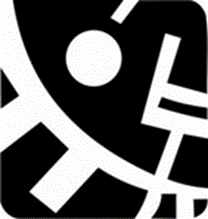
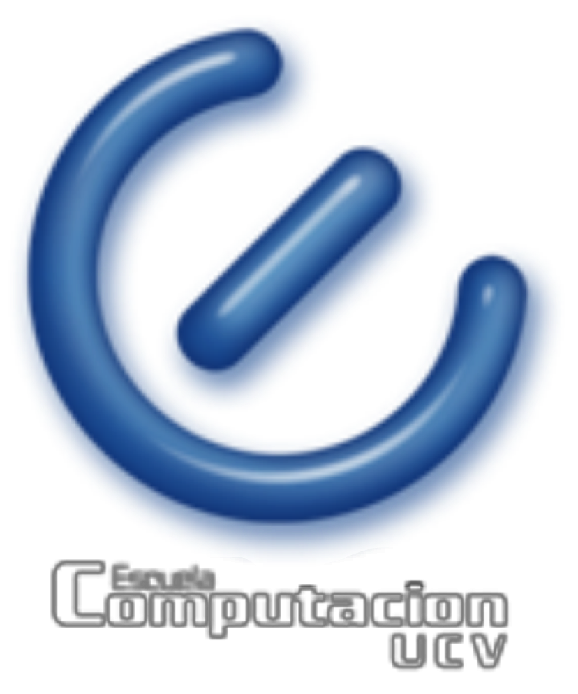

Aprende tecnología
sin miedo.
Material educativo interactivo del programa de Alfabetización Tecnológica Nivel 2, desarrollado en la Alcaldía de Chacao como proyecto de Servicio Comunitario — Facultad de Ciencias, UCV.


Temario completo
Diecisiete módulos que recorren todo el programa: desde encender el computador hasta entender los Bots y tu Huella Digital. Toca cada tarjeta para ver el contenido detallado.
Láminas del curso
Documentos PDF originales utilizados en clases — disponibles para descargar o consultar.
- Módulo 1 — Office: Word, Excel, PowerPoint
- Contraseñas e Inteligencia Artificial
- Entendiendo el WiFi en Casa
- Modo Incógnito
- Internet de las Cosas (IoT)
- Introducción al E-commerce Seguro
- Todo sobre Virus Informáticos
- La Revolución de los Bots
- Obsolescencia Programada
- Publicidad Digital
- Huella Digital y Derecho al Olvido
- Guía de Limpieza Total del Celular
Datos que te sorprenderán
Estadísticas reales del mundo digital que quizás no conocías — y un juego para poner a prueba lo que sabes.
¿Es esto verdad o es un mito? Toca cada tarjeta para descubrirlo.
30 Tips que cambiarán tu vida digital
Las recomendaciones más importantes del programa, condensadas para que las apliques desde hoy.
Preguntas Frecuentes
Las dudas más comunes que surgieron durante el programa, resueltas con claridad y sin tecnicismos.
Test Interactivo
Pon a prueba lo aprendido. Cada respuesta te explica por qué es correcta o incorrecta. ¡No te preocupes si te equivocas!
Glosario Tecnológico
40 términos del mundo digital explicados en palabras simples. Búscalos por letra o por nombre.
Cartel del programa
Resumen visual del programa de Alfabetización Tecnológica Nivel 2 — Alcaldía de Chacao · UCV.
Cartel Digital
Diseñado como material de divulgación del programa. Toca la imagen para verlo en pantalla completa o descárgalo en el formato que prefieras.
{kind=link}